GPU内核库ThunderKittens最近拿到NVIDIA Vera Rubin NVL72的访问权限，团队用几天时间翻新ISA、拿微基准戳芯片，把NVFP4与FP8 GEMM的支持补了进去。
Rubin完整保留了Blackwell的编程模型，老内核跑得起来，但只摸到roofline的42.1% 与44.4%。要让张量核心吃满，K步长、共享内存、张量内存三件事必须一起动。接下来是从42% 推到22 PFLOPS的完整过程。
NVIDIA Blackwell架构的第五代张量核心把GEMM的编程模型整个换了一遍。Hopper上的wgmma指令由整个warpgroup集体发射，Blackwell的tcgen05指令只需单个线程发射，一个小生产者warp就能驱动张量核心。累加器也从寄存器搬进张量内存，操作数直接从共享内存读取，单条MMA可以跨两个SM、横跨两个CTA。
为了在Blackwell上拿到有竞争力的性能，这个GEMM做了三件事：
启动线程块簇，让每对CTA通过TMA多播共享操作数，把HBM访存流量砍掉一半。
在簇内做warp分工：loader用TMA把A、B搬进共享内存，单个MMA warp驱动张量核心，消费者warpgroup把算完的累加器从张量内存送回HBM。
常驻执行，一个tile的输入还在流进来时，上一个tile的输出还在往外排。
靠这些手段，拿到了下面这组结果。
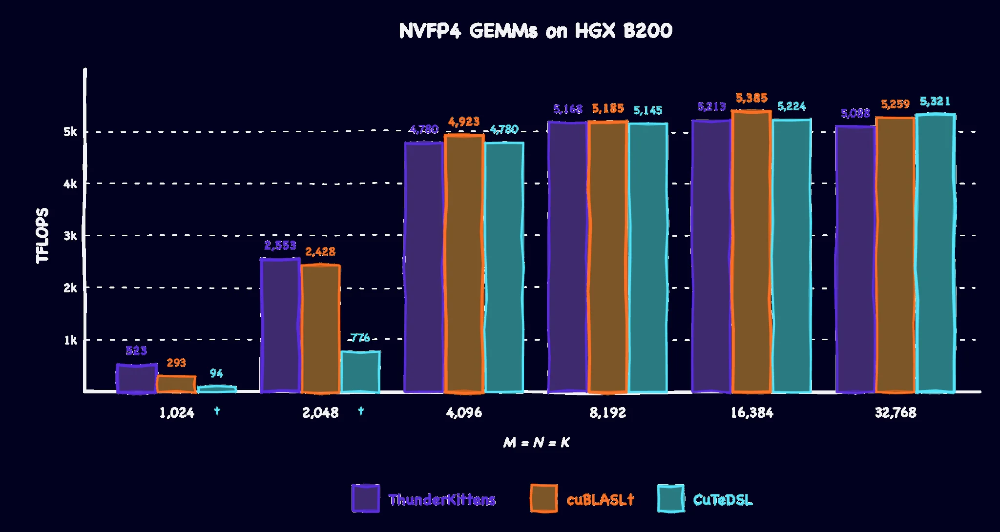
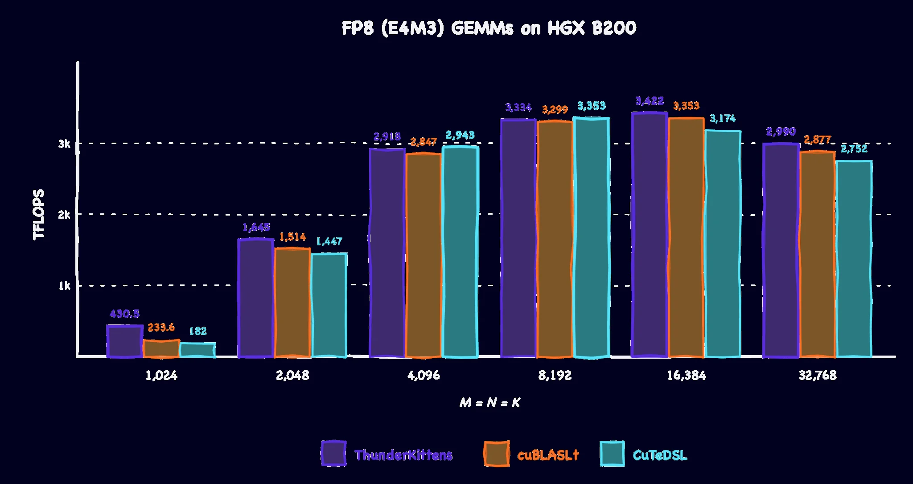
关于这些内核和背后的优化，可以看早先的Together博客或者ThunderKittens 2.0发布说明。
Rubin保留了Blackwell的编程模型，老内核原样还能跑。但直接放到Vera Rubin上，NVFP4与FP8内核只跑到roofline的42.1% 和44.4%，可优化的空间还很大。
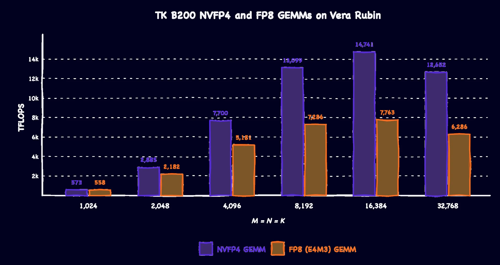
后半部分分两步走：先讲Rubin里对GEMM重要的新特性以及它们在ThunderKittens里的用法，再把这些特性逐步集成进现有的Blackwell NVFP4内核，把它推到22 PFLOPS以上，与cuBLAS和CuTE DSL打平。
核心矛盾是：Rubin让张量核心消费操作数的速度快了一倍，老的Blackwell内核却供不上。要摸到算力天花板，就得让每个tile从已经在片上的数据里榨出更多复用。
对比厂商规格，从Blackwell到Vera Rubin的提升如下。
就写高性能GEMM而言，我们特别关注下面几项。
| NVIDIA HGX B200 | NVIDIA Vera Rubin NVL72 | |
|---|---|---|
| NVFP4张量核心 | 9 PFLOPS / GPU | 35 PFLOPS / GPU |
| FP8张量核心 | 4.5 PFLOPS / GPU | 17.5 PFLOPS / GPU |
| FP16 / BF16张量核心 | 2.25 PFLOPS / GPU | 4 PFLOPS / GPU |
| 显存带宽 | 8 TB/s / GPU | 22 TB/s / GPU |
| SM数量 | 148 / GPU | 224 / GPU |
| 峰值功耗 | 1000W / GPU | 2300W / GPU |
先回顾一下，一条tcgen05.mma在MxNxK的tile上计算C = A@B + C，每步沿K方向消费固定的字节数。Blackwell上这一步是32字节，到了Vera Rubin可以提到64字节。MMA本身占用的时钟周期数不变，所以K翻倍意味着同一个指令窗口里能塞进两倍的工作量。
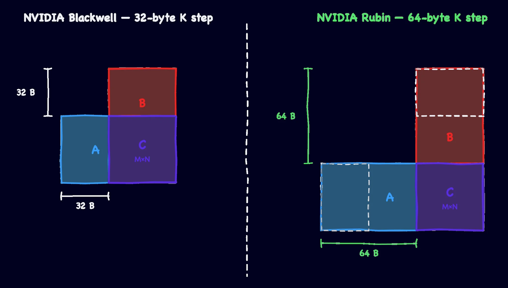
在ThunderKittens里，这通过给原有mma操作新增一个模板参数来表达。
mma_ABt (...); // Blackwell Default: 32-byte K step
mma_ABt<64>(...); // Vera Rubin: 64-byte K stepBlackwell引入了张量内存的概念：128 lane x 512列x 32 bit的空间，张量核心可以直接读写。到了Vera Rubin，这个空间扩展到576列，多出32 KiB可以支配。
注意，多出来的列只有通过 .exclusive限定符才能访问。这是PTX 9.4的新增特性，保证一个SM上只存在一个活跃的张量内存分配。非独占分配依然被限制在512列，且必须是2的幂。
在ThunderKittens里，用户可以给张量内存分配器加一个模板参数，声明这次分配是独占的。
template<int _nblocks_per_sm, int _ncta, bool _managed = true, bool _exclusive = false>
struct tensor_allocator { .... }
tensor_allocator<1, C::CLUSTER_SIZE, false> tm; // Blackwell default: 512 columns
tensor_allocator<1, C::CLUSTER_SIZE, false, true> tm; // Rubin: Up to 576 columnsHopper和Blackwell提供228 KiB共享内存，Vera Rubin引入了超规格共享内存模式，可以动态增加到328 KiB。这是主机侧设置，调用方式如下。
CUfunction function = nullptr;
cudaGetFuncBySymbol(&function,reinterpret_cast<const void*>(kernel));
cuFuncSetAttribute(function, CU_FUNC_ATTRIBUTE_SHARED_MEMORY_MODE,
CU_SHARED_MEMORY_MODE_ALLOW_OVERSIZED_SHARED_MEMORY);Blackwell引入了收集器缓冲区的概念：一个很小的MMA暂存区，可以锁住A tile，让下一条指令直接从缓冲区取数，而不必再访问共享内存。Vera Rubin把这项能力扩展到了B tile，对应 .collector::b::*。
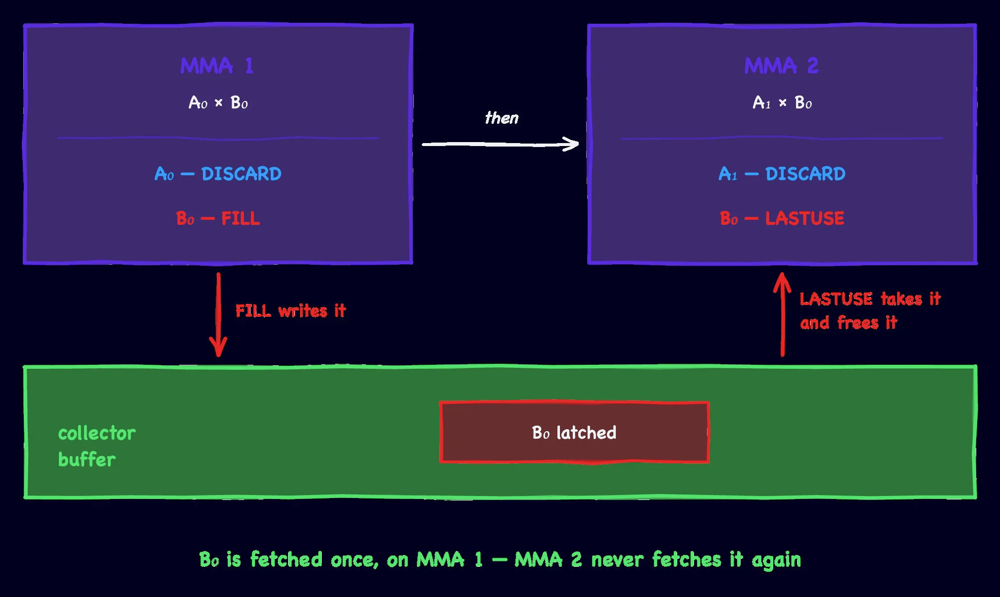
要用起来，就给每条MMA的操作数标注四种标签之一，说明它对收集器缓冲区做了什么。
「FILL」从共享内存读取操作数并锁存。
「USE」从缓冲区读取。
「LASTUSE」从缓冲区读取并释放。
「DISCARD」是默认值，跳过锁存。
这些标签是复用的许可，不是保证。张量核心即便拿到了复用许可，依然可能重新加载一次矩阵。
既然两个操作数都能常驻收集器缓冲区，就可以试一些新玩法。比如在2x2分块上，两侧都做收集，四条MMA的操作数读取从八次降到五次。
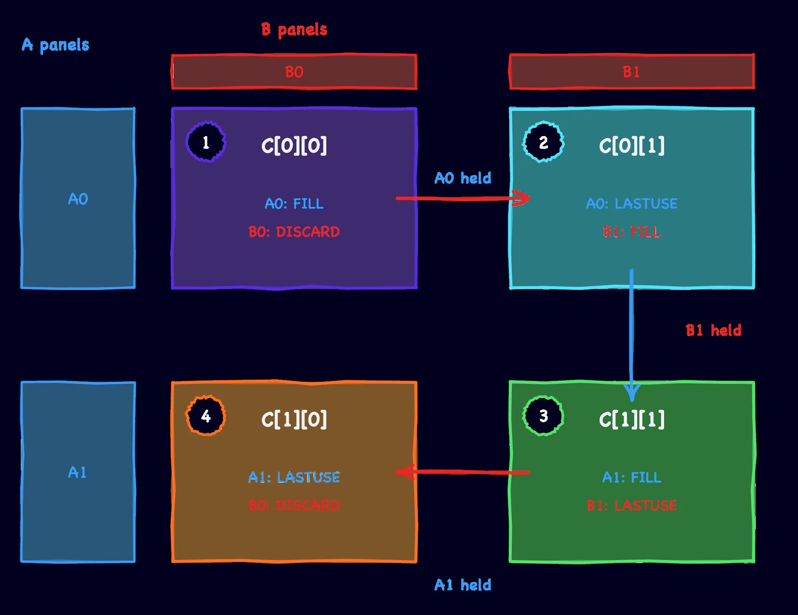
在ThunderKittens里可以这样写。
mma2_ABt_chunk<64, false, false, collector::FILL,collector::DISCARD>(C[0][0], a0, b0, ...);
mma2_ABt_chunk<64, false, false, collector::LASTUSE, collector::FILL >(C[0][1], a0, b1, ...);
mma2_ABt_chunk<64, false, false, collector::FILL, collector::LASTUSE>(C[1][1], a1, b1, ...);
mma2_ABt_chunk<64, false, false, collector::LASTUSE, collector::DISCARD>(C[1][0], a1, b0, ...);tcgen05.commit会在它处理的MMA结束后抵达mbarrier，通知生产者某个stage槽位已经可以复用。PTX 9.4引入了tcgen05.commit.sync_restrict::shared::read::mma::a，让A tile的信号可以提前发出：不必等MMA整体退休，只要MMA把A操作数从共享内存读完，就可以触发屏障，进而通知TMA loader开始写下一个stage的数据。
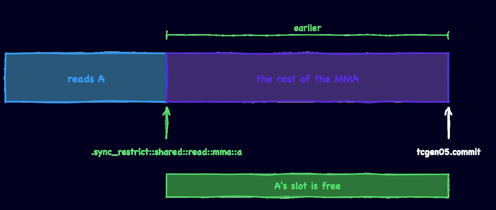
ThunderKittens新增了一种commit类型来表达它。
tensor_commit<2> (inputs_finished[stage], mask); // arrives when MMA retires
tensor_aread_commit<2>(A_finished[slot], mask); // arrives when MMA finishes reading A现在手上有了一组新特性和一个Blackwell GEMM。下面几节把它们逐个集成进原有内核，并解释为什么迁移到Vera Rubin时这些改动非做不可。
最直观的瓶颈来自仍然沿用Blackwell的32字节K步长。在Vera Rubin上，这种编码的ISA上限约为16.8 PFLOPS，而我们的NVFP4 Blackwell内核开箱就能跑到14.7 PFLOPS，已经是上限的88%。要继续往上走，就必须让MMA一次处理两倍的K字节。
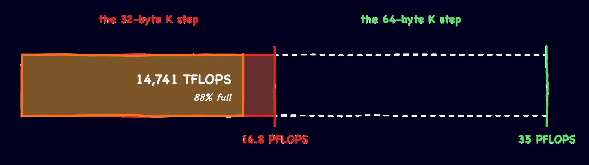
然而，只是给现有Blackwell内核打开更宽的编码，性能提升非常有限，远达不到预期的2倍。更宽的MMA只让张量核心消费操作数的速度快了一倍，并没有解决供数速度。要让双倍K真正有用，得同时拉两个杠杆：搬更少的字节，以及加深流水线把这些搬运掩盖掉。
要少读字节，就在同一个CTA pair上沿M方向再叠一个输出tile。两个累加器只在M上不同，因此可以共用同一块B。原来的Blackwell NVFP4内核用的是1x1分块，覆盖M512xN256的输出需要两个pair任务，各自独立搬运一份B。改成2x1之后，B只取一次就能覆盖同样的输出，操作数流量随之下降。
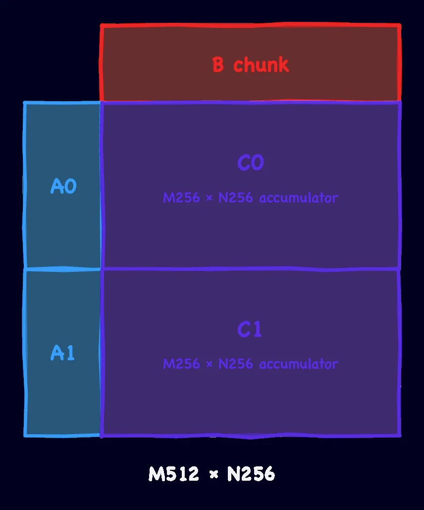
2x1分块在NVFP4 Blackwell内核上并不容易做到，因为张量内存当时被限制在256 KiB。两个M256xN256的累加器已经占满512列，块缩放MMA就没有空间存放A、B的缩放因子。程序员可以绕过去：让epilogue warp只加载累加器的一部分列就发出MMA空闲信号，让下一个K tile的MMA提前开始，但这会引入一段藏不住的延迟。有了Vera Rubin多出的64列，缩放因子可以直接放下，不必再跳这支舞。
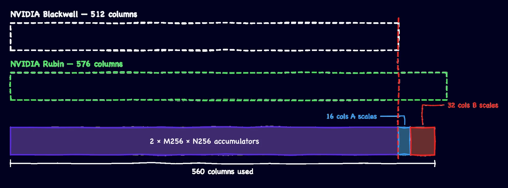
分块格式的变化降低了操作数流量，但并没有缩短每次取数的耗时。下一个挑战是让张量核心始终有数据可吃。Vera Rubin更大的共享内存允许我们建更深的流水线，提前把更多tile排进缓冲，给搬运留出更多完成时间。对NVFP4和FP8的16k方阵GEMM扫描环深度，结果如下。
NVFP4 16k方阵GEMM：
| 共享内存级数 | 所需共享内存 | 实测TFLOPS |
|---|---|---|
| 3 | 202 KiB | 17,054 |
| 4 | 258 KiB | 20,595 |
| 5 | 314 KiB | 22,239 |
FP8（E4M3）16k方阵GEMM的扫描结果：
| 配置 | 所需共享内存 | 实测TFLOPS |
|---|---|---|
| 4 | 209 KiB | 10,895 |
| 5 | 257 KiB | 11,995 |
| 6 | 305 KiB | 11,288 |
最大的收益来自最后这一级台阶，但前提是前面的优化已经就位。下面是把K步长、共享内存流水线和分块策略分别单独扫描的结果。
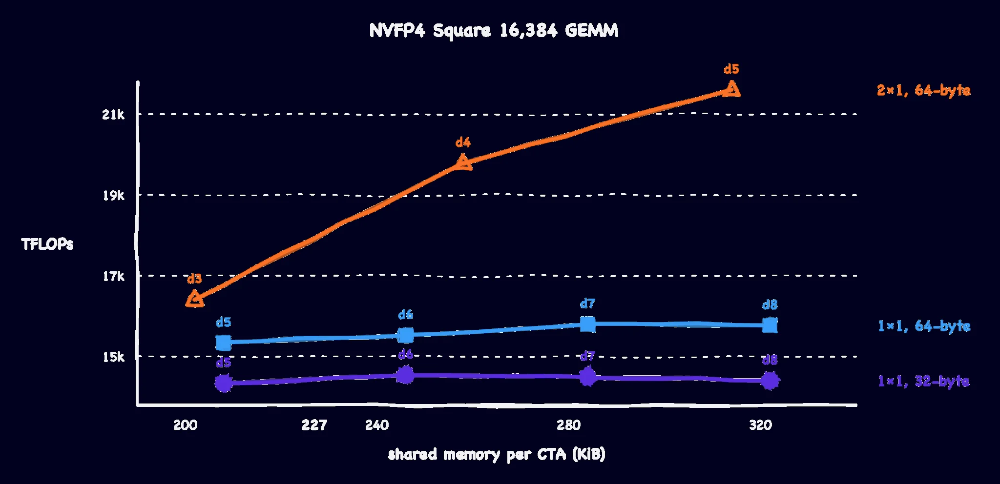
要把内核再往前推一点，还调了几个旋钮。
内核配置调优：针对不同负载继续调参。在CTA pair尺寸上，原来的1x1 tile格式在较小的方阵负载上表现最好；更大的形状则换成2x1 CTA pair分块，配合2、4或8的簇大小。此外，所有形状都会打乱tile的光栅化顺序，改善访存局部性。
B侧收集器：既然走的是2x1分块，就可以用上B侧收集器。一条MMA标「FILL」、下一条标「LASTUSE」，B的读取次数从两次降到一次，实测带来1% 到3% 的提升。
用上sync_restrict::shared::read::mma::a：在64k和128k的方阵NVFP4 GEMM上，提前释放A分别带来13.5% 和22.1% 的加速。这个指令在大尺寸下有用，是因为A tile会和其他资源争抢驻留位置，行数据在两次复用之间被逐出，loader只能等它回来；小块场景下A tile根本不会离开L2，读取本来足够快，不需要提前释放。要用这条指令，还得改掉传统的环序逻辑：普通GEMM里A、B属于同一个环，由同一条commit锁步驱动；而提前释放A需要把两者解耦，让A的加载独立进行。A的槽位必须更早释放，所以给A单独一个环，配一对arrived/finished屏障。
L2逐出提示：把A操作数标记为EVICT_LAST，鼓励它们留在L2里供后续任务复用。这份收益来自任务之间而非簇内，量级在千分之几。
最终在Vera Rubin上跑出来的性能如下。
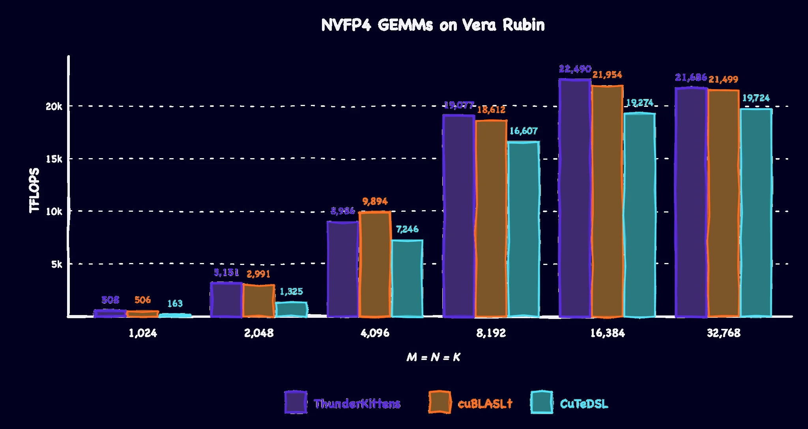
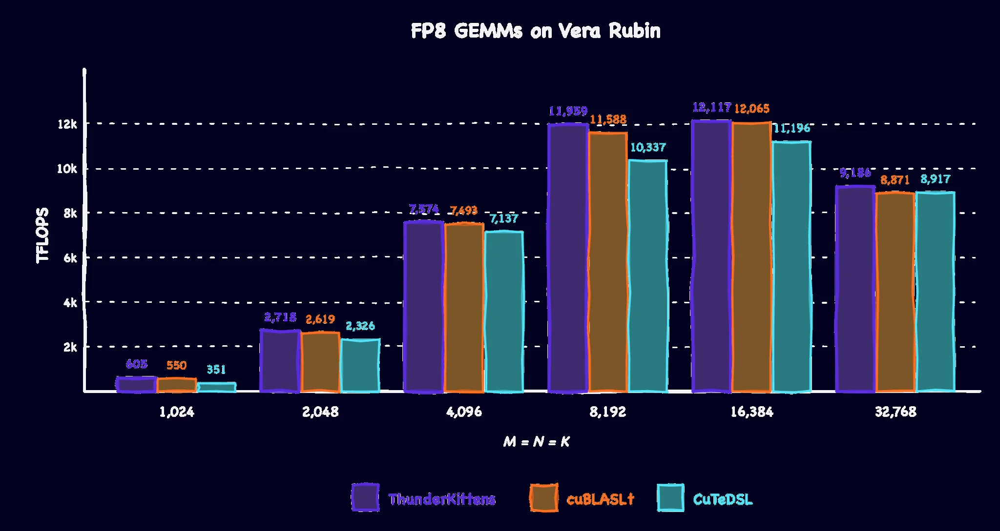
以上所有测量都在NVIDIA CUDA 13.4与Qualification Sample（QS）GPU上完成。随着Vera Rubin软件版本迭代，所有基线的性能预计还会继续提升。
参考：https://www.together.ai/blog/to-infinity-and-beyond-thunderkittens-now-on-nvidia-vera-rubin-nvl72